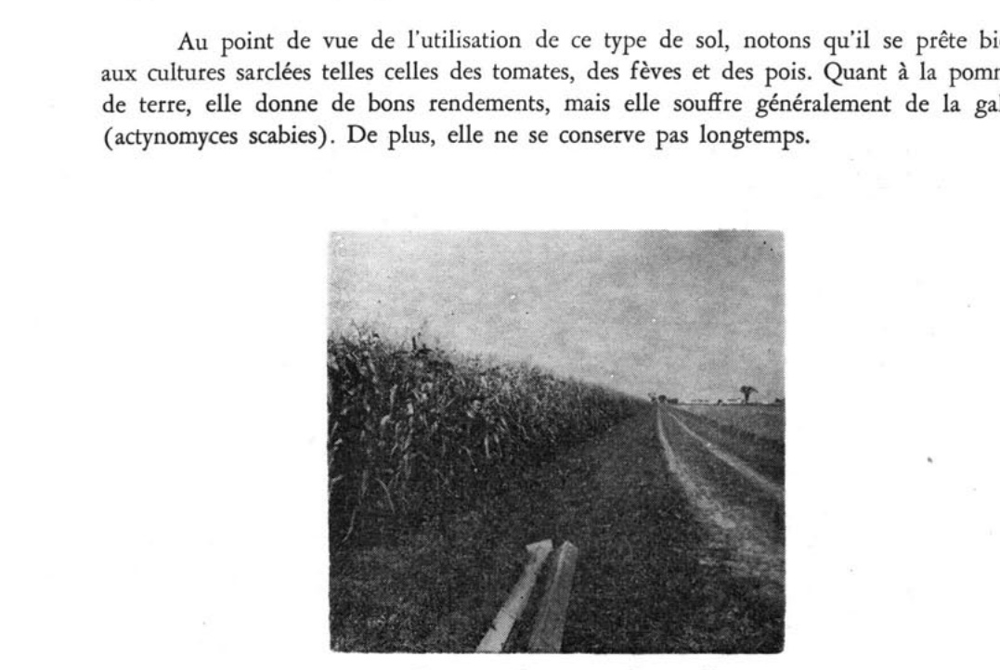
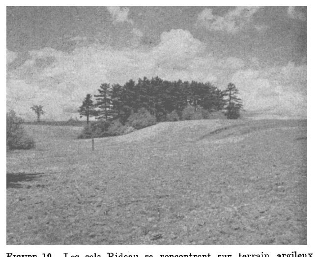
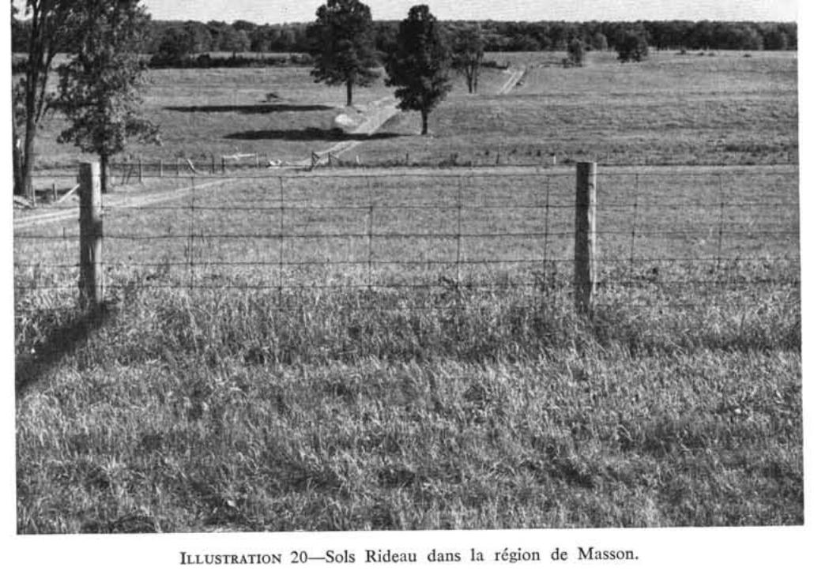
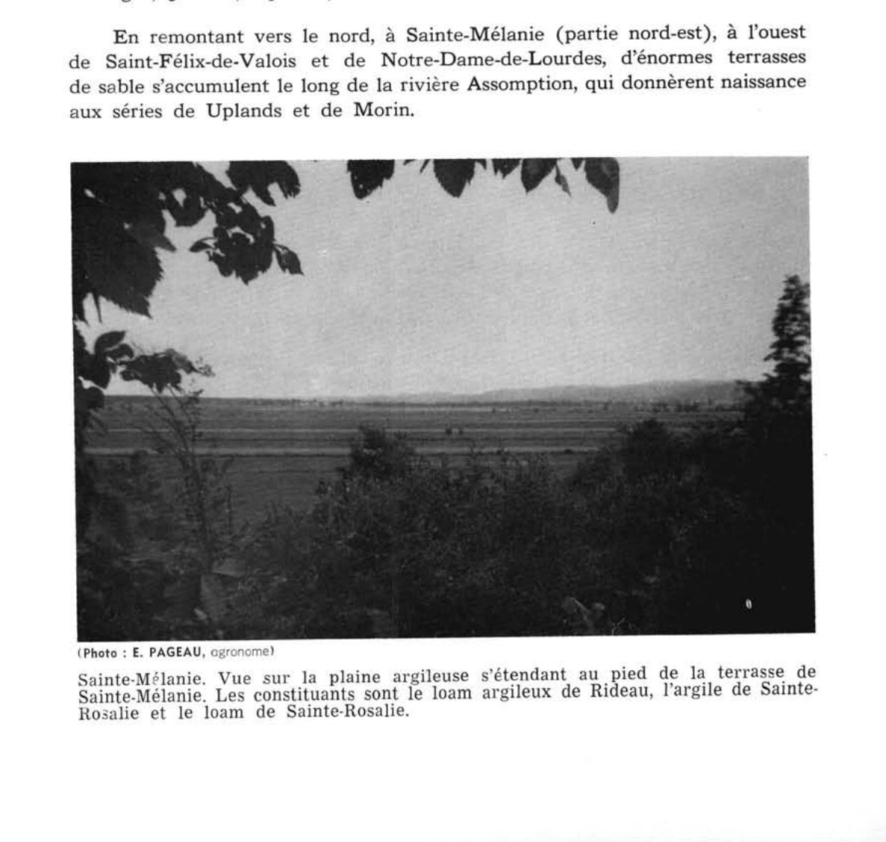
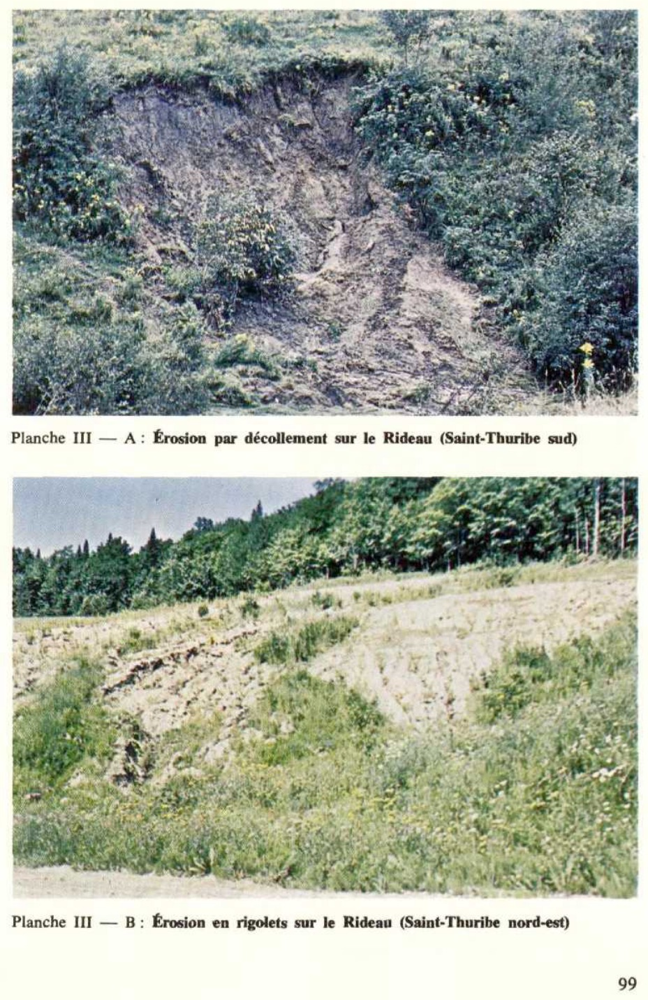
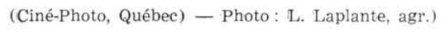
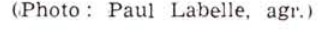
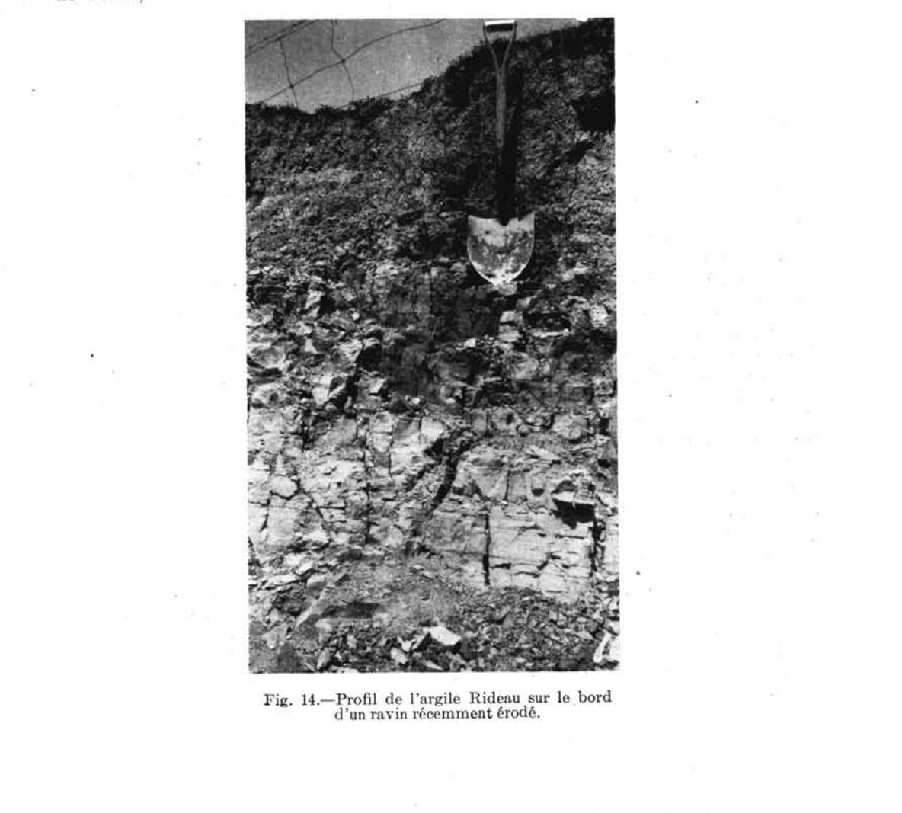

Identification & Caractéristiques Générales
La série de sol Rideau s'est développée sur d'épais dépôts d'argile marine quaternaire, caractérisés par une texture massive, homogène et une absence totale de fragments rocheux ou de cailloux. Ces dépôts, dont l'épaisseur excède fréquemment plusieurs dizaines de mètres, se rencontrent dans les basses terres à des altitudes variant généralement de 75 à 300 pieds. La géomorphologie de ces terrains se compose de surfaces presque unies à légèrement ondulées, fréquemment recoupées par des ravins profonds, des escarpements abrupts ou des dépressions naturelles situés à proximité des réseaux fluviaux, plaçant cette série en association caténaire directe avec les sols de la série Sainte-Rosalie.
Le profil pédologique présente un drainage externe modéré à excessif, dicté par la présence de pentes et de ravins, contrastant avec un drainage interne très lent attribuable à la forte teneur en argile, qui dépasse souvent 60 % dans le sous-sol. Cette texture lourde, combinée à une faible teneur en matière organique dans l'horizon de surface, confère au sol une forte capacité de rétention en eau, une aération réduite et une perméabilité restreinte. La dynamique hydrique est marquée par des phénomènes d'expansion et de contraction de l'argile provoquant le fendillement du sol au dessèchement et la formation de mottes dures. Le profil montre des taches de gley indicatives d'un engorgement temporaire, et certaines sections de berges peuvent exhiber un horizon sous-jacent lessivé de coloration claire.
Sur le plan agronomique, ces sols argileux lourds sont entièrement mis en valeur et conviennent principalement à la production de céréales, de plantes fourragères et de pâturages, tandis qu'ils sont moins adaptés aux cultures maraîchères ou fruitières en raison de leur difficulté de travail. La gestion de cette série comporte des contraintes majeures, incluant un risque élevé d'érosion hydrique, de formation de ravins et de glissements de terrain sur les pentes, ainsi qu'une sensibilité marquée aux excès d'humidité printaniers et aux sécheresses estivales. Les interventions culturales requises comprennent l'installation d'un réseau de drainage souterrain adéquat, le chaulage pour corriger l'acidité et favoriser l'implantation de légumineuses comme la luzerne, ainsi qu'un travail du sol rigoureux pour contrer la compacité et améliorer la structure de surface.
Classification Taxonomique & Environnement Pédologique
| Ordre Pédologique | Gleysolique |
|---|---|
| Grand Groupe (SCSS) | Gleysol orthique |
| Sous-Groupe Taxonomique | Gleysol orthique |
| Famille Pédologique | Argileuse-très fine, mixte argileux, neutre |
| Mode de Dépôt Parental | Marin |
| Classe de Drainage Naturel | Modérément bien drainé |
| Régime Thermique & Humidité | Doux / Subhumide |
Description Morphologique du Profil Type
Séquences génétiques des horizons pédologiques caractérisant le profil type représentatif de la série Rideau :
Profil cultivé (agricole) — Comté de Champlain
✓ Source : Comté de Champlain — Page 24Couleur Munsell : 2.5Y 5/2
Structure & Consistance : Granulaire à la surface devenant grossièrement polyédrique à la base
Description morphologique : Argile brun gris (2.5Y 5/2); structure granulaire à la surface devenant grossièrement polyédrique à la base; consistance très ferme à l'état sec, plastique et collante à l'état humide; perméabilité et aération imparfaites; $\text{pH}$ : 5.4 - 5.8.
Couleur Munsell : 5Y 6/2
Structure & Consistance : Polyédrique à granulaire
Description morphologique : Argile gris olive clair (5Y 6/2).
Couleur Munsell : 10YR 4/4, 5Y 5/2
Structure & Consistance : Grossièrement polyédrique
Description morphologique : Argile brun jaune foncé (10YR 4/4) à gris olive (5Y 5/2); structure grossièrement polyédrique; faiblement perméable; plastique à l'état humide; taches de rouille; contient jusqu'à 75% d'argile; $\text{pH}$ : 6.3.
Couleur Munsell : 2.5Y 5/4 (matrice), 10YR 5/2 (marbrures)
Structure & Consistance : Massive et très plastique lorsqu'humide
Description morphologique : Argile olive clair (2.5Y 5/4) à brun gris (10YR 5/2); structure massive et très plastique lorsqu'humide; quelques mouchetures de rouille; $\text{pH}$ : 6.3.
Profil cultivé (agricole) — Comté de Châteauguay
✓ Source : Comté de Châteauguay — Page 70Couleur Munsell : 2.5Y 7/2
Structure & Consistance : Granuleuse
Description morphologique : Argile faiblement à moyennement humifère, de teinte gris clair à l'état sec (2.5Y 7/2). Structure granuleuse, consistance friable; pH: 5.6.
Couleur Munsell : 2.5Y 6/2
Structure & Consistance : Polyédrique grossièrement développée
Description morphologique : Argile très lourde, de teinte gris-brun clair (2.5Y 6/2) à l'état sec, faiblement mouchetée de rouille. Structure polyédrique grossièrement développée, consistance ferme et compacte des agrégats. pH: 6.0.
Couleur Munsell : 2.5Y 6/2
Structure & Consistance : Massive
Description morphologique : Roche-mère: Argile très lourde, gris - brun clair (2.5Y 6/2) à l'état sec. Structure massive, consistance très plastique; pH: 6.4 - 6.6.
Profil représentatif — Comté de Argenteuil
✓ Source : Comté de Argenteuil — Page 61Couleur Munsell : Non précisée
Structure & Consistance : Granuleuse fine à moyenne
Description morphologique : Argile grise à gris brunâtre clair; structure granuleuse fine à moyenne; les agrégats sont fermes lorsqu'ils sont humides et durs lorsqu'ils sont secs (les sols cultivés sont souvent en motte); pH 5.2-6.0.
Couleur Munsell : Non précisée
Structure & Consistance : Polyédrique à granulaire
Description morphologique : On voit parfois dans le profil de sol cultivé des restes d'un horizon délavé gris pâle.
Couleur Munsell : Non précisée
Structure & Consistance : Cuboïde anguleuse peu définie
Description morphologique : Argile grise légèrement mouchetée de brun jaunâtre; structure cuboïde anguleuse peu définie; plutôt imperméable; plastique et collante; très ferme; pH 6.2-6.4.
Couleur Munsell : Non précisée
Structure & Consistance : Massive ou cuboïde anguleuse
Description morphologique : Argile grise avec de rares taches de rouille; structure massive ou cuboïde anguleuse; plastique et collante; pH 6.4-6.9.
Profil cultivé (agricole) — Comté de Gatineau
✓ Source : Comté de Gatineau — Page 50Couleur Munsell : 2.5Y 5/2
Structure & Consistance : Granuleuse et cuboïde sub-angulaire
Description morphologique : Argile brun grisâtre (10YR-2.5Y 5/2); structure granuleuse et cuboïde sub-angulaire; ferme à dure sous les conditions moyennes d'humidité; plastique et collante lorsque très humide; tendant à se former en mottes dures; modérément perméable et aérée sous les conditions d'humidité moyennes; pH 5.5 à 6.2.
Couleur Munsell : 5Y 5/2 (matrice), 2.5Y 6/2 (marbrures)
Structure & Consistance : Polyédrique à granulaire
Description morphologique : Argile gris-olive à gris brunâtre pâle (5Y 5/2-2.5Y 6/2); faibles marbrures; pH 5.5 à 6.0.
Couleur Munsell : 2.5Y 5/2
Structure & Consistance : Cuboïde
Description morphologique : Argile gris-olive à gris brunâtre (5Y-2.5Y 5/2); faibles marbrures; très mal aérée, peu perméable, plastique et collante à l'état humide; modérément aérée et perméable à l'état sec ou peu humide; structure cuboïde; pH 5.8 à 6.4.
Couleur Munsell : 5Y 4/2
Structure & Consistance : Massive à l'état humide
Description morphologique : Argile gris-olive à grise (5Y 4/2-5/1); structure massive à l'état humide; rétrécissement important au séchage et formation de larges cubes; pH 6.6 à 7.3.
Profil cultivé (agricole) — Comté de Hull
✓ Source : Comté de Hull — Page 56Couleur Munsell : 2.5Y 5/2
Structure & Consistance : Granuleuse et polyédrique sub-anguleuse
Description morphologique : Argile brun grisâtre (10YR–2.5Y 5/2); structure granuleuse et polyédrique sub-anguleuse; ferme à dure sous les conditions moyennes d'humidité; plastique et collante lorsque très humide; tendant à se former en mottes dures; modérément perméable et aérée sous les conditions d'humidité moyennes; pH 5.5 à 6.2.
Couleur Munsell : 5Y 5/2 (matrice), 2.5Y 6/2 (marbrures)
Structure & Consistance : Polyédrique
Description morphologique : Argile gris-olive à gris brunâtre pâle (5Y 5/2–2.5Y 6/2); faibles marbrures; pH 5.5 à 6.0. Argile gris-olive à gris brunâtre (5Y–2.5Y 5/2); faibles marbrures; très mal aérée, peu perméable, plastique et collante à l'état humide; modérément aérée et perméable à l'état sec ou peu humide; structure polyédrique; pH 5,8 à 6.4.
Couleur Munsell : 5Y 4/2
Structure & Consistance : Massive à l'état humide
Description morphologique : Argile gris-olive à grise (5Y 4/2–5/1); structure massive à l'état humide; rétrécissement important au séchage et formation de larges cubes; pH 6.6 à 7.3.
Profil cultivé (agricole) — Comté de Joliette
✓ Source : Comté de Joliette — Page 65Couleur Munsell : 2.5Y 7/2
Structure & Consistance : Granuleuse
Description morphologique : Loam argileux, structure granuleuse, gris clair (2.5Y 7/2), consistance friable. pH: 6.6.
Couleur Munsell : 2.5Y 6/2
Structure & Consistance : Polyédrique
Description morphologique : Loam argileux, structure polyédrique, grossièrement développée, faiblement mouchetée de rouille, gris brun clair (2.5Y 6/2), consistance ferme à collante. pH: 6.6.
Couleur Munsell : 2.5Y 6/2
Structure & Consistance : Massive
Description morphologique : Argile, structure massive, gris brun clair (2.5Y 6/2), consistance très plastique. pH: 6.8.
Profil cultivé (agricole) — Comté de Laprairie
✓ Source : Comté de Laprairie — Page 328Couleur Munsell : Non précisée
Structure & Consistance : Polyédrique subangulaire, moyenne, faible
Description morphologique : Texture : ALi; Brun foncé (10YR 3,5/3); structure Polyédrique subangulaire, moyenne, faible; consistance Friable; limite Nette, ondulée
Couleur Munsell : 10YR 4/3 (matrice), 10YR 4/4 (marbrures)
Structure & Consistance : Amorphe
Description morphologique : Texture : ALo; Brun (10YR 4/3); Marbrures : Rares, fines, faibles (10YR 4/4); structure Amorphe; consistance Friable; limite Nette, régulière
Couleur Munsell : 10YR 5/3 (matrice), 10YR 5/6 (marbrures)
Structure & Consistance : Amorphe
Description morphologique : Texture : ALo; Brun (10YR 5/3); Marbrures : Fréquentes, fines, distinctes (10YR 5/6); structure Amorphe; consistance Friable; limite Nette, régulière
Couleur Munsell : 5Y 4/2 (matrice), 10YR 4/4 (marbrures)
Structure & Consistance : Amorphe
Description morphologique : Texture : ALo; Brun grisâtre foncé (2,5Y 4/2); Marbrures : Rares, fines, marquėes (10YR 4/4); structure Amorphe; consistance Ferme; limite Nette, régulière
Couleur Munsell : 5Y 5/2 (matrice), 5Y 5/4 (marbrures)
Structure & Consistance : Amorphe
Description morphologique : Texture : ALo; Brun grisâtre (2,5Y 5/2); Marbrures : Rares, fines, distinctes (2,5Y 5/4); structure Amorphe; consistance Ferme
Profil cultivé (agricole) — Comté de L'assomption
✓ Source : Comté de L'assomption — Page 43Couleur Munsell : 2.5Y 5/2
Structure & Consistance : Granuleuse et cuboïde subangulaire
Description morphologique : Argile brun grisâtre (10YR-2.5Y 5/2); structure granuleuse et cuboïde subangulaire; ferme à dure dans les conditions moyennes d'humidité; plastique et collante à l'état de haute humidité; tendance à former des mottes très dures en séchant; modérément perméable et aérée dans les conditions moyennes d'humidité; pH 5.5 à 6.2.
Couleur Munsell : 5Y 5/2 (matrice), 2.5Y 6/2 (marbrures)
Structure & Consistance : Polyédrique à granulaire
Description morphologique : Argile gris olive à gris brunâtre pâle (5Y 5/2-2.5Y 6/2); mouchetures de faible contraste; pH 5.5 à 6.0.
Couleur Munsell : 2.5Y 5/2
Structure & Consistance : Cuboïde angulaire
Description morphologique : Argile gris olive à gris brunâtre (5Y-2.5Y 5/2); avec faibles marbrures; faiblement perméable et peu aérée; plastique et collante à l'état très humide; modérément aérée et modérément perméable à l'état sec ou légèrement humide; structure cuboïde angulaire; pH 5.8 à 6.4.
Couleur Munsell : 5Y 4/2
Structure & Consistance : Massive lorsque le matériau sur place est très humide
Description morphologique : Argile grise à gris olive (5Y 4/2-5/1); structure massive lorsque le matériau sur place est très humide; rétrécissement considérable au séchage et formation de larges cubes; pH 6.6 à 7.3.
Profil représentatif — Comté de Maskinongé
✓ Source : Comté de Maskinongé — Page 39Couleur Munsell : 5YR 4/3
Structure & Consistance : Granulaire
Description morphologique : Argile brun rouge (5YR 4/3), faiblement humifère, structure granulaire, moyennement friable, pH : 5.5.
Couleur Munsell : Non précisée
Structure & Consistance : Polyédrique à granulaire
Description morphologique : Faiblement lessivé.
Couleur Munsell : 7.5YR 5/2 (matrice), 2.5Y 6/2 (marbrures)
Structure & Consistance : Polyédrique
Description morphologique : Argile brune (7.5YR 5/2) to gris brun clair (2.5Y 6/2) avec traînées blanchâtres et faiblement mouchetée de rouille, structure polyédrique. Consistance compacte, pH : 6.1.
Couleur Munsell : 2.5Y 4/2
Structure & Consistance : Polyédrique
Description morphologique : Argile très lourde, brun gris foncé (2.5Y 4/2) à gris olive (5 5/2) structure polyédrique, plastique et collante. pH : 6.7.
Profil cultivé (agricole) — Sols de l'île de Montréal
✓ Source : Sols de l'île de Montréal — Page 58Couleur Munsell : Non précisée
Structure & Consistance : Granulaire fine à moyenne
Description morphologique : Argile grise ou gris brunâtre clair; structure granulaire fine à moyenne; les agrégats sont fermes lorsque humides et durs lorsque secs (les sols cultivés sont souvent motteux); pH 5·2 à 6·0.
Couleur Munsell : Non précisée
Structure & Consistance : Granulaire peu dessinée ou structure polyédrique fine
Description morphologique : Argile grise légèrement mouchetée de brun jaunâtre; structure granulaire peu dessinée ou structure polyédrique fine; plutôt imperméable; plastique et collante; très ferme; pH 6·2 à 6·4.
Couleur Munsell : Non précisée
Structure & Consistance : Massive ou polyédrique
Description morphologique : Argile grise avec quelques taches de rouille; structure massive ou polyédrique; plastique et collante; pH 6·4 à 6·9.
Profil cultivé (agricole) — Comté de Portneuf — Phase érodée
✓ Source : Comté de Portneuf — Page 48Couleur Munsell : 10YR 4/2, 2.5Y 7/2
Structure & Consistance : Polyédrique à granulaire
Description morphologique : Loam limono-argileux brun-gris foncé (10YR 4/2 h), gris clair (2.5Y 7/2 s) ; granulaire, moyenne, forte ; friable ; racines très abondantes, fines à microscopiques, non-orientées, endo-agrégats ; limite abrupte, régulière ; pH : 5.6.
Couleur Munsell : 2.5Y 5/2, 2.5Y 7/2
Structure & Consistance : Polyédrique à granulaire
Description morphologique : Loam limono-argileux brun-gris (2.5Y 5/2 h), gris clair (2.5Y 7/2 s) ; taches assez nombreuses, petites, faibles ; polyédrique sub-angulaire, grossière, faible ; ferme ; racines peu abondantes, très fines et microscopiques, non-orientées, endo-agrégats ; limite distincte, régulière ; pH : 6.8.
Couleur Munsell : 5Y 6/2, 5Y 8/1
Structure & Consistance : Polyédrique à granulaire
Description morphologique : Loam limono-argileux gris-olive clair (5Y 6/2 h), blanc (5Y 8/1 s) ; taches assez nombreuses, petites, faibles ; massive ; ferme ; pH : 7.4.
Profil représentatif — Comté de Bagot
✓ Source : Comté de Bagot — Page 90Couleur Munsell : 10YR 7/1
Structure & Consistance : Granuleuse
Description morphologique : Argile, faiblement à moyennement humifère, gris clair (10YR 7/1), à l'état sec. Structure granuleuse. Consistance friable. pH 5.9.
Couleur Munsell : Non précisée
Structure & Consistance : Polyédrique à granulaire
Description morphologique : Faiblement lessivé. Gris plus pâle.
Couleur Munsell : 10YR 6/3
Structure & Consistance : Polyédrique grossièrement développée
Description morphologique : Argile très lourde, brun pâle (10YR 6/3), faiblement mouchetée de rouille. Structure polyédrique grossièrement développée, consistance ferme et compacte. pH 6.1.
Couleur Munsell : 10YR 6/2
Structure & Consistance : Massive
Description morphologique : Argile très lourde, gris brun clair (10YR 6/2). Structure massive, consistance très plastique pH 6.3.
Profil cultivé (agricole) — Comté de Saint-hyacinthe
✓ Source : Comté de Saint-hyacinthe — Page 75Couleur Munsell : 10YR 4/2 (matrice), 5YR 4/6 (marbrures)
Structure & Consistance : Polyédrique angulaire
Description morphologique : Argile; brun grisâtre foncé à brun foncé (10YR 4/2,5); mouchetures brun vif (7,5YR 4/6), assez nombreuses, fines, très contrastées; structure polyédrique angulaire, fine, peu développée; consistance friable; très poreuse; limite nette, ondulée; réaction faiblement acide.
Couleur Munsell : 5Y 5/2 (matrice), 5YR 4/6 (marbrures)
Structure & Consistance : Polyédrique angulaire
Description morphologique : Argile lourde; brun grisâtre (2,5Y 5/2); mouchetures brun vif (7,5YR 4/6), très nombreuses, fines, très contrastées; structure polyédrique angulaire, moyenne, assez développée; consistance friable à ferme; très poreuse; limite graduelle, ondulée; réaction neutre.
Couleur Munsell : 5Y 5/2 (matrice), 5YR 4/6 (marbrures)
Structure & Consistance : Polyédrique angulaire
Description morphologique : Argile lourde; brun grisâtre (2,5Y 5/2); mouchetures brun vif (7,5YR 4/6), assez nombreuses, fines, très contrastées; structure polyédrique angulaire, moyenne à grosse, très développée; consistance ferme; très poreuse; réaction neutre.
Profil naturel (vierge) — Comté de Soulanges — Phase érodée de
✓ Source : Comté de Soulanges — Page 48Couleur Munsell : Non précisée
Structure & Consistance : Polyédrique à granulaire
Description morphologique : Matière organique brun foncé.
Couleur Munsell : Non précisée
Structure & Consistance : Granuleuse fine
Description morphologique : Terre franche argileuse à argile gris brun foncé; structure granuleuse fine; friable; perméable; pH 5.1-5.8.
Couleur Munsell : Non précisée
Structure & Consistance : Polyédrique à granulaire
Description morphologique : Argile grise lessivée avec quelques taches de rouille. En moyenne, cet horizon n'a qu'un pouce d'épaisseur.
Couleur Munsell : Non précisée
Structure & Consistance : Nuciforme assez bien développée
Description morphologique : Argile gris brunâtre légèrement marbrée de rouille. Structure nuciforme assez bien développée, plastique lorsque mouillée; pH 5.4-6.2.
Couleur Munsell : Non précisée
Structure & Consistance : En cubes fins ou nuciforme fine
Description morphologique : Argile gris brun mat; très légèrement marbrée; structure en cubes fins ou nuciforme fine; plastique lorsque mouillée; pH 6.0-6.8.
Couleur Munsell : Non précisée
Structure & Consistance : En cubes ou en fragments irréguliers
Description morphologique : Argile grise; structure en cubes ou en fragments irréguliers; très plastique 6.6-7.3.
Profil représentatif — Comté de Trois-rivières — Phase érodée
✓ Source : Comté de Trois-rivières — Page 47Couleur Munsell : 2.5Y 4/2
Structure & Consistance : Granuleuse
Description morphologique : Argile, structure granuleuse, brun gris foncé (2.5Y 4/2), friable; pH : 5.8.
Couleur Munsell : 2.5Y 5/2 (matrice), 7.5Y 4/4 (marbrures)
Structure & Consistance : Polyédrique
Description morphologique : Argile limoneuse, structure polyédrique, brun gris (2.5Y 5/2), faiblement mouchetée de rouille et de couleur brun foncé (7.5Y 4/4), consistance plastique; pH : 6.2.
Couleur Munsell : 2.5Y 6/2, 5YR 4/4
Structure & Consistance : Polyédrique
Description morphologique : Argile, structure polyédrique, gris brun clair (2.5Y 6/2) avec quelques taches de gley de couleur brun rouge (5YR 4/4), consistance très plastique; pH : 5.9.
Profil représentatif — Comté de Huntingdon
✓ Source : Comté de Huntingdon — Page 155Couleur Munsell : 2.5Y 7/2
Structure & Consistance : Polyédrique à granulaire
Description morphologique : Argile, faiblement à moyennement humifère, de teinte gris clair à l'état sec (2.5Y 7/2).
Couleur Munsell : Non précisée
Structure & Consistance : Granuleuse
Description morphologique : Faiblement lessivé. Structure granuleuse, consistance friable. pH: 5.6.
Couleur Munsell : 2.5Y 6/2
Structure & Consistance : Polyédrique grossièrement développée
Description morphologique : Argile très lourde, de teinte gris brun clair (2.5Y 6/2) à l'état sec, faiblement mouchetée de rouille. Structure polyédrique grossièrement développée, consistance ferme et compacte des agrégats. pH: 6.0.
Couleur Munsell : 2.5Y 6/2
Structure & Consistance : Massive
Description morphologique : Roche-mère: argile très lourde, gris brun clair (2.5Y 6/2) à l'état sec. Structure massive, consistance très plastique. pH: 6.4 — 6.6.
Profil représentatif — Comté de Berthier
✓ Source : Comté de Berthier — Page 66Couleur Munsell : 2.5Y 7/2
Structure & Consistance : Granulaire
Description morphologique : Argile faiblement humifère, de teinte gris clair (2.5 Y 7/2), structure granulaire, consistance moyennement friable. pH: 5.4 — 5.7.
Couleur Munsell : Non précisée
Structure & Consistance : Granuleuse
Description morphologique : Argile faiblement lessivée. Structure granuleuse.
Couleur Munsell : 2.5Y 6/2 (matrice), 5Y 4/2 (marbrures)
Structure & Consistance : Polyédrique à granulaire
Description morphologique : Argile très lourde, de teinte gris-brun clair (2.5 Y 6/2) à olive (5 Y 4/2). Avec traînée blanchâtre et faiblement mouchetée de rouille à la base, consistance compacte. pH: 5.6 — 6.0.
Couleur Munsell : 2.5Y 6/2, 5Y 5/2
Structure & Consistance : Polyédrique grossièrement développée
Description morphologique : Argile très lourde (roche-mère), gris brun clair (2.5 Y 6/2) à gris olive (5 Y 5/2), structure polyédrique grossièrement développée, consistance très plastique. pH: 6.4. — 6.6.
Profils Photographiques & Planches de Terrain
Documents iconographiques, figures pédologiques et coupes de terrain documentées dans les mémoires d'inventaire pour de la série Rideau :








Propriétés Physico-Chimiques & Analyses de Laboratoire
| Horizon | Prof. limite | pH (H₂O) | M.O. % | C tot. % | N tot. % | C.E.C. (cmol/kg) | Sable % | Limon % | Argile % | P Meh3 (mg/kg) | K (cmol/kg) | Ca (cmol/kg) | MVA (g/cm³) |
|---|---|---|---|---|---|---|---|---|---|---|---|---|---|
| Ap1 | 10.0 cm | 6.5 | 4.04 | 2.34 | 0.21 | 28.8 | 1.7 | 31.3 | 67.0 | 32.3 | 0.75 | 14.13 | 1.2 |
| Ap2 | 27.0 cm | 6.58 | 3.41 | 1.98 | 0.18 | 28.8 | 2.3 | 29.7 | 68.0 | 23.1 | 0.62 | 14.08 | 1.33 |
| B | — | 6.75 | 2.53 | 1.47 | 0.13 | 30.1 | 0.9 | 30.2 | 68.9 | 13.5 | 0.57 | 14.7 | 1.34 |
Particularités Régionales, Phases & Variantes Pédologiques
Déclinaisons régionales, faciès texturaux, phases d'érosion ou de pierrosité et variantes cartographiées par étude pour de la série Rideau :
| Étude Régionale | Symbole | Appellation / Phase / Variante | Différenciation avec la série type (Analyse pédologique) |
|---|---|---|---|
| Comté de Argenteuil | Ri |
Rideau argile | Modalité modale de référence (type de base de la série). |
| Comté de Bagot | Ri |
Rideau argile | Conforme à la série type de référence (caractéristiques texturales et drainage identiques). |
| Comté de Huntingdon | Ri |
Rideau argile | Conforme à la série type de référence (caractéristiques texturales et drainage identiques). |
| Comté de Berthier | Ri |
Rideau argile | Conforme à la série type de référence (caractéristiques texturales et drainage identiques). |
| Comté de Champlain | Ri-e |
Rideau argile érodée | Phase érodée à horizon superficiel tronqué par l'érosion. |
| Comté de Châteauguay | Ri |
Rideau argile | Conforme à la série type de référence (caractéristiques texturales et drainage identiques). |
| Comté de Drummond | Ri |
Rideau argile | Conforme à la série type de référence (caractéristiques texturales et drainage identiques). |
| Comté de Gatineau | Ri |
Rideau argile | Conforme à la série type de référence (caractéristiques texturales et drainage identiques). |
Rih |
Rideau argile lourde | Faciès d'argile très lourde et plastique, plus difficile à égoutter. | |
| Comté de Hull | Ri |
Rideau argile | Conforme à la série type de référence (caractéristiques texturales et drainage identiques). |
Ril |
Rideau loam argileux | Faciès textural de surface loam argileux (distinct du argile de référence). | |
| Comté de Joliette | Ri |
Rideau loam argileux | Faciès textural de surface loam argileux (distinct du argile de référence). |
| Comté de Laprairie | RI4 |
Rideau loam limono-argileux | Conforme à la série type de référence (caractéristiques texturales et drainage identiques). |
RI4bw |
Rideau loam limono-argileux 3-8 % de pente légèrement à modérément érodé | Phase érodée à horizon superficiel tronqué par l'érosion. | |
RI5bw |
Rideau argile limoneux 3-8 % de pente légèrement à modérément érodé | Phase érodée à horizon superficiel tronqué par l'érosion. | |
| Comté de L'assomption | Ri |
Rideau argile | Conforme à la série type de référence (caractéristiques texturales et drainage identiques). |
| Comté de Maskinongé | Ri-e |
Rideau argile phase érodée | Phase érodée à horizon superficiel tronqué par l'érosion. |
| Les sols de l’Île de Montréal | Ri |
Rideau argile | Conforme à la série type de référence (caractéristiques texturales et drainage identiques). |
| Comté de Nicolet | Ri |
Rideau argile | Conforme à la série type de référence (caractéristiques texturales et drainage identiques). |
| Comté de Portneuf | Ri |
Rideau loam limono-argileux à argile limoneuse | Faciès plus limoneux (argile limoneuse), offrant une forte rétention en eau mais vulnérable à la battance. |
Ri-e |
Rideau argile limoneuse phase érodée | Phase érodée à horizon superficiel tronqué par l'érosion; Faciès plus limoneux (argile limoneuse), offrant une forte rétention en eau mais vulnérable à la battance. | |
| Comté de Richelieu | RI3 |
Rideau loam | Faciès à texture loameuse plus aérée et perméable que l'argile de référence (travail du sol plus aisé et meilleur égouttement). |
RI4 |
Rideau loam argileux | Faciès textural de surface loam argileux (distinct du argile de référence). | |
RI5 |
Rideau argile | Conforme à la série type de référence (caractéristiques texturales et drainage identiques). | |
| Comté de Rouville | RI4 |
Rideau loam argileux | Faciès textural de surface loam argileux (distinct du argile de référence). |
| Comté de Saint-hyacinthe | RI3 |
Rideau loam | Faciès à texture loameuse plus aérée et perméable que l'argile de référence (travail du sol plus aisé et meilleur égouttement). |
RI4 |
Rideau loam argileux | Faciès textural de surface loam argileux (distinct du argile de référence). | |
RI5 |
Rideau argile | Conforme à la série type de référence (caractéristiques texturales et drainage identiques). | |
| Comté de Soulanges | R |
Rideau argile | Conforme à la série type de référence (caractéristiques texturales et drainage identiques). |
R-s |
Rideau argile phase de taches sableuses | Conforme à la série type de référence (caractéristiques texturales et drainage identiques). | |
| Comté de Trois-rivières | Ri |
Rideau argile | Conforme à la série type de référence (caractéristiques texturales et drainage identiques). |
Ri-e |
Rideau argile érodée | Phase érodée à horizon superficiel tronqué par l'érosion. | |
| Comté de Yamaska | RI5 |
Rideau argile | Conforme à la série type de référence (caractéristiques texturales et drainage identiques). |
Ri |
Rideau argile | Conforme à la série type de référence (caractéristiques texturales et drainage identiques). | |
Ri-s |
Rideau argile avec taches de sable en surface | Conforme à la série type de référence (caractéristiques texturales et drainage identiques). | |
| Sols de l'île de Montréal | RDU |
Série Rideau | Conforme à la série type de référence (caractéristiques texturales et drainage identiques). |
Distribution Pédo-Paysagère & Représentativité Cartographique (Couverture PPS 2026)
- Sainte-Rosalie argile (SSL) — co-occurrente dans 108 polygone(s)
- Zones ravinées (RRR) — co-occurrente dans 52 polygone(s)
- Pontiac loam limoneux à loam limono-argileux (PTC) — co-occurrente dans 51 polygone(s)
Aptitudes Agronomiques, Hydropédologie & Conservation des Sols
Indicateurs Hydropédologiques & Vulnérabilité à l'Érosion (BDHP 2026)
Interprétation BDHP : Potentiel de ruissellement modérément élevé. Faible taux d'infiltration, présence d'horizons ralentissant le drainage descendant.
Classement selon l'Inventaire des Terres du Canada (ITC / CLI) : Classe 2c.
- Potentiel agricole : Terroir adapté aux cultures régionales selon la texture dominante et la régie de drainage.
- Contraintes majeures : Modérément bien drainé. Risque d'engorgement temporaire ou d'excès d'eau printanier.
- Gestion & Aménagement : Drainage souterrain ou superficiel préconisé sur les terres planes. Chaulage et apport organique régulier selon les bilans agronomiques.
- Cultures adaptées : Grandes cultures (maïs, soya, céréales), prairies fourragères et cultures maraîchères selon le contexte géomorphologique.